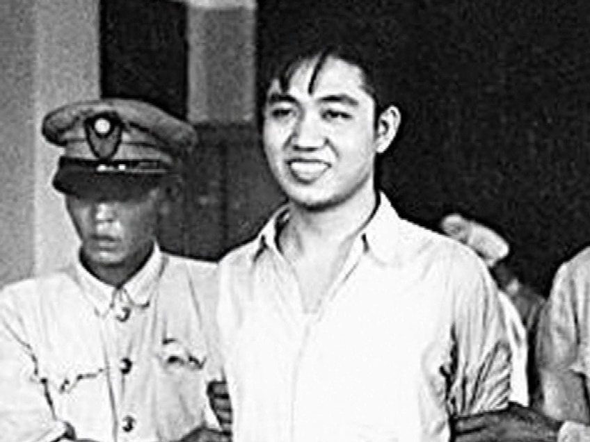
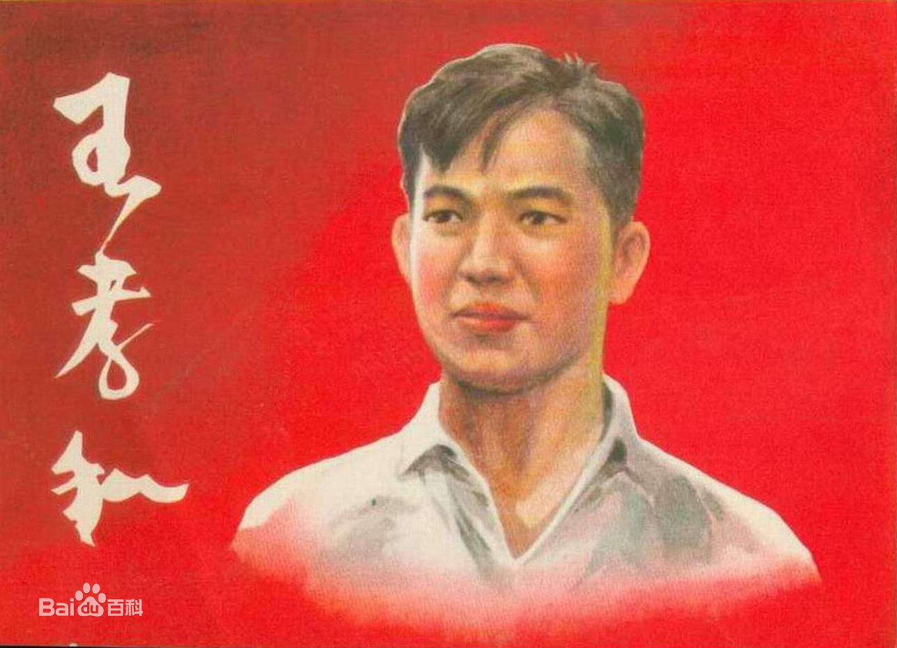
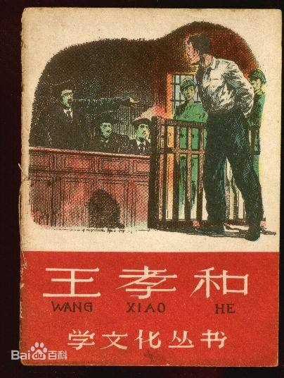

历史人物
为真理而献身——王孝和
-

王孝和
浙江宁波鄞县人。在上海励志英文专科学校读书时参加爱国学生运动。1941年5月，加入中国共产党。1943年，由党组织安排进杨树浦发电厂工作。1946年，在“上电”工人“九日八夜”罢工斗争中表现出色，当选为厂工会干事、工会常务理事，为维护工人利益，不顾特务威逼，领导工人与厂方斗争。1948年4月被捕，备受重刑，威武不屈，以监狱与法庭为战场揭露国民党的罪恶。同年9月30日，在上海提篮桥监狱被枪杀。 -

人物事迹
“我一定用我的生命保卫党，保卫工人阶级的崇高事业，永不动摇，一直革命到底。” 这铿锵有力，掷地有声的话语是王孝和的入党誓言。最后他用自己年轻的生命，实现了这一誓言。 -

文艺作品
儿童文学作品《王孝和的故事》作者：柯蓝
《不死的王孝和》作者：柯蓝、赵自 插画：阿老、华三川、赵延年
连环画《王孝和》
编号： PA00396815
分类： 绘画单行本-现代-上海-50年代-64开
简介： 上海人民美术出版社.1958年9月第1版.1958年10月第4次印刷.绘画:华三川
返回目录